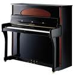

Абкник - регулировочный винт для установки высоты подъема репетиционного рычага механики рояля.
Абстракт - деревянный стержень, подвешенный шарнирно к фигуре, соединяющий молоточковый механизм с клавишей.
Аграф - латунный винт с отверстиями в головке, фиксирующими положение струн хора.
Аксендрат - латунные прутки для изготовления осей, на которых вращаются молоточки и другие рычаги механизма.
Ауслезирование - отвод толкающего рычага-шпилера в сторону от молоточкового узла.
Ауслезерная пупка - круглая кнопка на винте, превращающая прямолинейное движение шпилера во вращательное.
Ауслезерный лейстик - линейка, в которую завинчены винты с ауслезерными пупками.
Аншлаг - части струн от линии удара молоточков до струнных штабиков.
Бачки - части корпуса, несущие клавишно- молоточковый механизм.
Бакенклетцы - бруски, заполняющие пространство между крайними
клавишами и бачками корпуса.
Бентик - гибкая ленточка, соединяющая молоточковый узел с фигурой.
Вирбель - колок для закрепления струны.
Вирбельбанк - деревянное ложе для вирбелей.
Вагебанк - опорный брусок клавиатурной рамы, на штифты которого надеваются клавиши.
Вебфильц - мягкий, протканный нитью, пружинящий войлок, наклеивающийся на шультерные выступы.
Гаммербанк - брус, на котором монтируются все детали молоточкового механизма.
Гаммерштиль - деревянная палочка, несущая на себе молоточек.
Гаммерлейстик - планка с войлочной подушкой, на которую ложатся молоточки механизма рояля. Гарнировка - отделка частей молоточковых механизмов и клавиатур суконными, войлочными и замшевыми прокладками.
Демпфер - глушитель струн.
Демпфергальтер - рычаг, держащий демпферную головку в механизме пианино.
Декатировка - уплотнение суконных и войлочных материалов.
Дреббелирование - явление дрожания молоточков, вызывающее дробные удары их по струнам.
Друк клавиатурный - глубина опускания клавиш от исходной позиции до упора в суконные друкшайбы клавиатурной рамы.
Друкклетц - шаблон для измерения глубины опускания клавиш.
Друкцанги - специальные плоскогубцы для обжатия суконных прокладок клавиш.
Друк струн - давление, создаваемое струнами на резонансную деку.
Затц - комплект однотипных деталей молоточкового механизма и клавиатуры.
Заглушка - брусок, наклеенный на резонансную деку, ограничивающий распространение звуковых волн.
Интонировка - обработка молоточковых головок с целью улучшения окраски звука.
Канитель - набивка на басовых струнах.
Капсюль - деревянная или металлическая колодочка, направляющая движение рычагов молоточковых механизмов и клавиш.
Каподастр - металлическая планка, привинчиваемая к вирбельбанку и прижимающая струны к струнному штабику.
Керн - деревянный брусочек, являющийся основой фортепианного молоточка.
Клап - откидная крышка, закрывающая клавиатуру.
Клетцы - деревянные бруски различной формы и размеров, несущие функции ограничителей и упоров.
Консоли - вертикальные фигурные стойки корпуса пианино.
Контрфенгер - тормозной башмачок на каждом молоточковом узле механизма пианино.
Креповка - регулирование проволочных деталей механизма путем изгибания.
Крепейзены - специальные регулировочные инструменты для выгибания проволочных деталей.
Крепцанги - специальные плоскогубцы для регулирования частей клавишного и молоточкового механизмов.
Контрклавиатура - набор демпферных рычагов, встроенных в корпус рояля позади клавиатуры.
Лейстики - длинные рейки и планки, ограничивающие перемещение рычагов клавишно-молоточкового механизма.
Линяя удара - совокупность точек удара фортепианных молоточков на струнах.
Ложка - металлический стерженек на заднем конце фигуры молоточкового механизма, приводящий в движение демпфер.
Механика - бытовое название фортепианного молоточкового механизма.
Модератор - устройство для приглушения звука, вдвигающего планку с полоской мягкого войлока в пространство между струнами и молотками.
Нагель - деревянный штифт для укрепления клеевых соединений.
Нахдрук - добавочный ход клавиши после вывода толкающего рычага шпиллера из-под молоточкового узла.
Обердемпфер - старая демпферная система в пианино, где все демпферные узлы, привинченные на деревянную доску, накладываются сверху на молоточковый механизм.
Панцирь - сплошная плита чугунной рамы, закрывающая вирбельбанк.
Пасовка - точная подгонка частей при сборке.
Польстер - подушка в виде длинной полосы из толстого мягкого сукна. на которую ложатся молотки или клавиши.
Педаль - система рычагов, приводимых в действие ногой исполнителя для изменения продолжительности и громкости звучания.
Пилоты - регулируемые винты, передающие движение от клавиши к фигурам механизма.
Пупка - круглая колодочка, служащая для упора или держания мелких деталей молоточковых механизмов.
Пушель - мягкий плоский войлок демпферов, заглушающий гладкие струны.
Рулейстик - планка, на которую ложатся молотки в механизме пианино.
Резонансная дека - деревянная пластина, усиливающая звучание струн.
Репетиция - устройство клавишно-молоточковых механизмов, позволяющее быстро повторять удары молотков по струнам.
Рипки - упругие деревянные бруски, наклеенные на резонансную деку для улучшения ее акустических и механических качеств.
Рихтовка - выравнивание кода молотков и других частей механизма.
Фенгер - тормозная колодочка на проволочной стойке, захватывающая фортепианный молоточек при его отходе от струн.
Форшибунг - металлический угольник, передвигающий механизм рояля при нажатии левой педали.
Фильц - высокосортный технический войлок различной плотности, из которого изготавливают молоточковые и демпферные головки.
Фигура - промежуточный горизонтальный рычаг с насаженным на ось толкателем - шпилером, передающий движение от клавиши к молоточку.
Флейка - малые суконные шайбы на опорных штифтах клавиатурной рамы.
Форбаум - брусок лицевой части корпуса рояля, закрывающий спереди чугунную раму и вирбельбанк.
Фусклетц - верхняя широкая часть ножки рояля или брус, в который ввинчиваются ножки.
Фуга - линия прилегания или склейки деревянных частей.
Футор - массивная деревянная рама, несущая на себе все части пианино и рояля.
Хор - созвучие двух или трех струн, настроенных в один тон и ударяемых одним молоточком.
Хорейзен - стальная оправка для выравнивания интервалов струн на штабике рамы.
Цирлейстик - длинный брусок, закрывающий просвет между клавишами и клавиатурным клапом пианино.
Цуги - деревянные рычаги педального механизма.
Цоколь - деревянный пол, закрывающий снизу корпус пианино.
Штабик струнный - литой порожек на вирбельном панцире чугунной рамы, на котором каждая струна разделяется на работающую (звучащую) и неработающую части.
Штанга демпферная - металлический стержень на гаммербанке, отводящий демпферы пианино от струн.
Шток - короткий деревянный штифт, передающий движение подъема демпферов при нажатии правой педали рояля.
Штег - подставка для струн в виде деревянного бруса на лицевой стороне резонансной деки.
Штейнунг - расстояние, на котором отстоят фортепианные молоточки от струн.
Штиц - упор для подъема крышки рояля.
Штифтовка - соединение подвижных частей механизма с капсюлями на коротких осях (штифтах).
Штульрама - массивная рама, привинчиваемая к бачкам корпуса и служащая базой для клавишно-молоточкового механизма.
Шпатц - расстояние (зазор) между однотипными деталями клавишно-молоточкового механизма.
Шпатцейзен - инструмент для регулирования зазоров между узлами и деталями механизма.
Шпилер - толкающий рычажок, приводящий в движение молоточек.
Шпилерлюфт - зазор между головкой шпилера и выступом шультера в исходной позиции механизма. Шпрейцы - брусья футора и чугунной рамы, несущие нагрузки от сил натяжения струн.
Шпон - строганная и лущеная фанера
Шлейф - проволочный стерженек с петлей на конце для присоединения ленточки бентика к фигуре.
Шультер - фигурная плоская колодочка, в которой крепится молоточек и имеется выступ для упора шпилера.